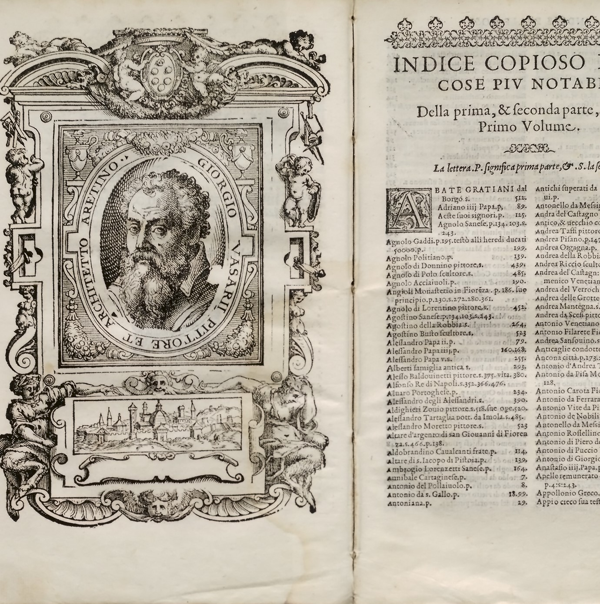
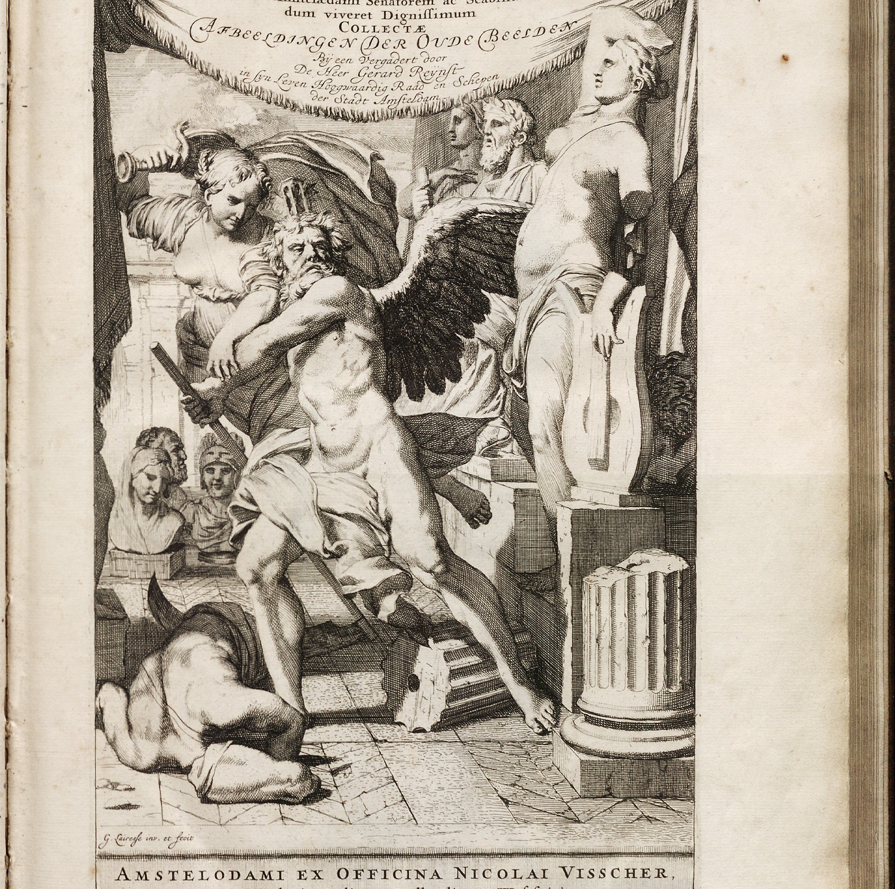
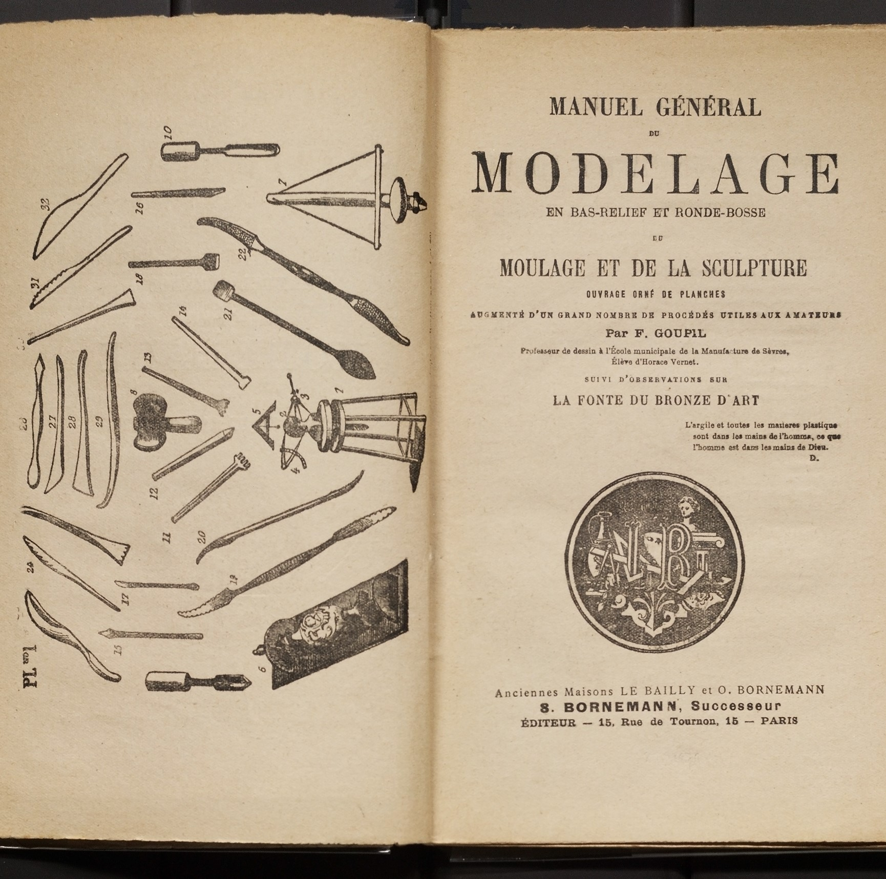

Rare Books
The National Gallery of Art Library rare books collection comprises over 12,000 volumes of early printed books and primary source material related to the history of Western art from the Middle Ages to the present, particularly the Italian, Dutch, Flemish, French, German, Spanish, British, and American schools.

Biographies of Artists
The rare books collection contains one of the most complete samplings of compendium biographies of artists available anywhere around the world.

Collection Catalogues
Catalogues of the works in public collections are abundant, but the rare books collection also contains one of the largest assemblies of private collection catalogs available in a public institution.

Art Materials
Catalogues of materials, especially paint and color sample books, are an important resource for researchers and conservators. They provide vital clues about the materials available in a given time and place which can illuminate an artist’s original intention.